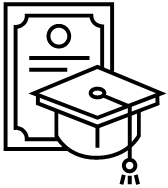

Honors & Awards | 荣誉与获奖
Honors & Awards | 荣誉与获奖
 Academic Awards | 学术获奖
-
第34届中国控制与决策会议张嗣瀛优秀青年论文奖提名奖 | Finalist for Zhang Si-Ying Outstanding Youth Paper Award in 34th Chinese Control and Decision Conference (CCDC), in 2022 [Cert]
-
2021年辽宁省优秀博士毕业论文奖 | Excellent Doctoral Dissertation Award of Liaoning Province, Liaoning Provincial Education Department, China, in 2021 [Cert]
-
2021年东北大学优秀博士学位论文奖 | Excellent Doctoral Dissertation Award of Northeastern University, Northeastern University, Shenyang, China, in 2021 [Cert]
-
2021年中国自动化学会优秀博士论文奖 | Excellent Doctoral Dissertation Award of Chinese Association of Automation (CAA), Chinese Association of Automation (CAA), China, in 2021 [Link] [Cert]
-
2019年东北大学流程工业综合自动化国家重点实验室优秀科研奖 | Outstanding Scholar Award of State Key Lab of Synthetic Automation of Process Industries, State Key Lab of Synthetic Automation of Process Industries, Northeastern University, Shenyang, China, in 2019
-
2018年东北大学流程工业综合自动化国家重点实验室优秀科研奖 | Outstanding Scholar Award of State Key Lab of Synthetic Automation of Process Industries, State Key Lab of Synthetic Automation of Process Industries, Northeastern University, Shenyang, China, in 2018
-
Best Paper Award in 2018 International Conference on Advance Mechatronic Systems (ICAMechS), Zhengzhou, China, August 29 - September 2, in 2018 [Cert]
-
第29届中国过程控制会议优秀学生论文奖 | Excellent Student Paper Award in 29th Chinese Process Control Conference (CPCC), Shenyang, China, July 27-29, in 2018 [Link] [Cert]
-
2017年中国冶金教育学会优秀硕士学位论文奖 | Excellent Master Dissertation Award of Chinese Society of Metallurgical Education, Chinese Society of Metallurgical Education, Ministry of Education, China, in 2017 [Cert]
-
2017年东北大学流程工业综合自动化国家重点实验室优秀科研奖 | Excellent Scholar Award of State Key Lab of Synthetic Automation of Process Industries, State Key Lab of Synthetic Automation of Process Industries, Northeastern University, Shenyang, China, in 2017
-
2016年东北大学流程工业综合自动化国家重点实验室优秀科研奖 | Outstanding Scholar Award of State Key Lab of Synthetic Automation of Process Industries, State Key Lab of Synthetic Automation of Process Industries, Northeastern University, Shenyang, China, in 2016
-
2016年辽宁省优秀硕士毕业论文奖 | Excellent Master Dissertation Award of Liaoning Province, Liaoning Provincial Education Department, China, in 2016 [Cert]
-
2016年东北大学优秀硕士毕业论文奖 | Excellent Master Dissertation Award of Northeastern University, Northeastern University, Shenyang, China, in 2016 [Cert]
-
日本樱花科技计划 | Japan "Sakula Science" Youth Project, Japanese Government, in 2016
-
2014年东北大学优秀本科毕业论文奖 | Excellent Bachelar Dissertation Award of Northeastern University, Northeastern University, Shenyang, China, in 2014 [Cert]
![[Cert]](doc/2018ICAMechS最佳论文奖.jpg){kind=link}
![[Cert]](doc/2017年中国冶金教育学会优秀硕士学位论文.jpg){kind=link}
![[Cert]](doc/2016辽宁省优秀硕士毕业论文.jpg){kind=link}
![[Cert]](doc/2016年东北大学优秀硕士论文证书.jpg){kind=link}
![[Cert]](doc/2014东北大学优秀本科毕业论文.jpg){kind=link}
Honorary Titles | 荣誉称号
-
2017-2019年度信息科学与工程学院优秀共产党员 | Excellent Communist Party Members, Information Science and Engineering College, Northeastern University, Shenyang, China, 2017-2019 [Cert]
-
2019年东北大学“五四青年奖章”十佳研究生 | "May4th Youth Medal" Ten Excellent Graduate Students of Northeastern University, Northeastern University, Shenyang, China, in 2019 [Link] [Cert]
-
2018年沈阳市优秀研究生 | Excellent Graduate Student in Shenyang, Department of Education, Shenyang, China, in 2018 [Cert]
-
2018年东北大学优秀研究生 | Excellent Graduate Student of Northeastern University, Northeastern University, Shenyang, China, in 2018 [Cert]
-
2015年沈阳市优秀研究生 | Excellent Graduate Student in Shenyang, Department of Education, Shenyang, China, in 2015 [Cert]
-
2015年东北大学优秀研究生 | Excellent Graduate Student of Northeastern University, Northeastern University, Shenyang, China, in 2015 [Cert]
-
2013年东北大学优秀团员 | Excellent League Member of Northeastern University, Northeastern University, Shenyang, China, in2013 [Cert]
-
2012年东北大学科技创新优秀个人 | Excellent Personal in Science and Technology Innovation of Northeastern University, Northeastern University, Shenyang, China, in 2012 [Cert]
-
2012年东北大学优秀团员 | Excellent League Member of Northeastern University, Northeastern University, Shenyang, China, in 2012 [Cert]
![[Cert]](doc/2017-2019信息学院优秀共产党员.jpg){kind=link}
![[Cert]](doc/2019年东北大学五四青年奖章十佳研究生.jpg){kind=link}
![[Cert]](doc/2018年东北大学优秀研究生.jpg){kind=link}
![[Cert]](doc/2015年沈阳市优秀研究生.jpg){kind=link}
![[Cert]](doc/2015年东北大学三好研究生.jpg){kind=link}
![[Cert]](doc/2012-2013学年东北大学优秀团员.jpg){kind=link}
![[Cert]](doc/2012-2013学年东北大学科技创新优秀个人.jpg){kind=link}
![[Cert]](doc/2011-2012学年东北大学优秀团员.jpg){kind=link}
Competition Awards | 比赛获奖
-
2013年全国大学生电子设计竞赛二等奖 | The Second Award of 2013 National Undergraduate Electronic Design Contest, Organization Committee of National Undergraduate Electronic Design Contest, Ministry of Education, China, in 2013 [Cert]
-
2013年IT杯辽宁省电子设计竞赛一等奖 | The First Award of 2013 "TI" Cup Liaoning Provincial Undergraduate Electronic Design Contest, Liaoning Provincial Education Department, China, in 2013 [Cert]
-
2013年Freescale杯智能车竞赛东北赛区二等奖 | The Second Award of the eighth "Freescale" Cup National Undergraduate Smart Car Contest in Northeast Division, Ministry of Education, China, in 2013 [Cert]
-
2013年美国数学建模竞赛一等奖 | The Meritorious Winner (The first award) of 2013 American Mathematical Contest in Modeling, COMAP: Consortium for Mathematics and Its Applications, USA, in 2013 [Cert]
-
2012年辽宁省数学建模竞赛三等奖 | The Third Award of Liaoning Provincial National Undergraduate Mathematical Contest in Modeling, Liaoning Provincial Mathematics Committee, China, in 2012
-
2012年IT杯辽宁省电子设计竞赛二等奖 | The Second Award of 2012 "TI" Cup Liaoning Provincial Undergraduate Electronic Design Contest, Liaoning Provincial Education Department, China, in 2012 [Cert]
-
2012年世界大学生建模竞赛竞赛中国赛区三等奖 | The Third Award of International Undergraduate Mathematical Contest in Modeling in Chinese Division, Organization Committee of International Undergraduate Mathematical Contest in Modeling, in 2012 [Cert]
-
2011年辽宁省数学竞赛一等奖 | The First Award of the Third Liaoning Provincial National Undergraduate Mathematical Contest, Liaoning Provincial Mathematics Committee, China, in 2011 [Cert]
-
2011年东北大学工程制图竞赛二等奖 | The Second Award of Northeastern University Mechanical Drawing Contest, Northeastern University, China, in 2011
![[Cert]](doc/2013年全国电子设计大赛二等奖.jpg){kind=link}
![[Cert]](doc/2013年TI杯辽宁省高等学校本科大学生电子设计大赛一等奖.jpg){kind=link}
![[Cert]](doc/第八届飞思卡尔全国大学生智能车竞赛东北赛区二等奖.jpg){kind=link}
![[Cert]](doc/2012年辽宁省电子设计竞赛二等奖.jpg){kind=link}
![[Cert]](doc/2012ICM杯数学建模竞赛三等奖.jpg){kind=link}
![[Cert]](doc/第三届全国大学生数学竞赛辽宁省一等奖.jpg){kind=link}
Scholarships & Fellowships | 奖学金
-
Hong Kong Research Grants Council (RGC) Postdoctoral Fellowship Scheme (PDFS) 2023/24 | 香港研资局博士后奖学金计划2023/24 [Link] [PDF] [Cert]
-
2018年博士研究生国家奖学金 | National Scholarships, Ministry of Education, China, in 2018 [Cert]
-
2018年东北大学卓越博士奖学金 | Excellent Doctoral Scholarship of Northeastern University, Northeastern University, in 2018
-
2018年张嗣瀛教育基金优秀博士生奖学金 | Excellent Doctoral Scholarship of Zhang Siying Education Fund, Zhang Siying Education Fund, in 2018 [Cert]
-
2015年硕士研究生国家奖学金 | National Scholarships, Ministry of Education, China, in 2015 [Cert]
-
2015年东北大学研究生一等奖学金 | First Class Award Scholarship of the Graduate School, Northeastern University, in 2015
-
2014年东北大学研究生一等奖学金 | First Class Award Scholarship of the Graduate School, Northeastern University, in 2014
-
2013至2014学年第一学期东北大学优秀学生二等奖学金 | The Second Award Scholarship of Northeastern University Excellent Student of the First Term, Northeastern University, China, 2013-2014
-
2012至2013学年第二学期东北大学优秀学生二等奖学金 | The Second Award Scholarship of Northeastern University Excellent Student of the Second Term, Northeastern University, China, 2012-2013
-
2012至2013学年第一学期东北大学优秀学生二等奖学金 | The Second Award Scholarship of Northeastern University Excellent Student of the First Term, Northeastern University, China, 2012-2013
-
2011至2012学年第二学期东北大学优秀学生三等奖学金 | The Third Award Scholarship of Northeastern University Excellent Student of the Second Term, Northeastern University, China, 2011-2012
-
2011至2012学年第一学期东北大学优秀学生二等奖学金 | The Second Award Scholarship of Northeastern University Excellent Student of the First Term, Northeastern University, China, 2011-2012
-
2010至2011学年第二学期东北大学优秀学生二等奖学金 | The Second Award Scholarship of Northeastern University Excellent Student of the Second Term, Northeastern University, China, 2010-2011
![[Cert]](doc/香港研资局博士后奖学金计划202324.jpg){kind=link}
![[Cert]](doc/2018国家奖学金.jpg){kind=link}
![[Cert]](doc/2018年张嗣瀛教育基金优秀博士生奖学金.jpg){kind=link}
![[Cert]](doc/2015国家奖学金.jpg){kind=link}